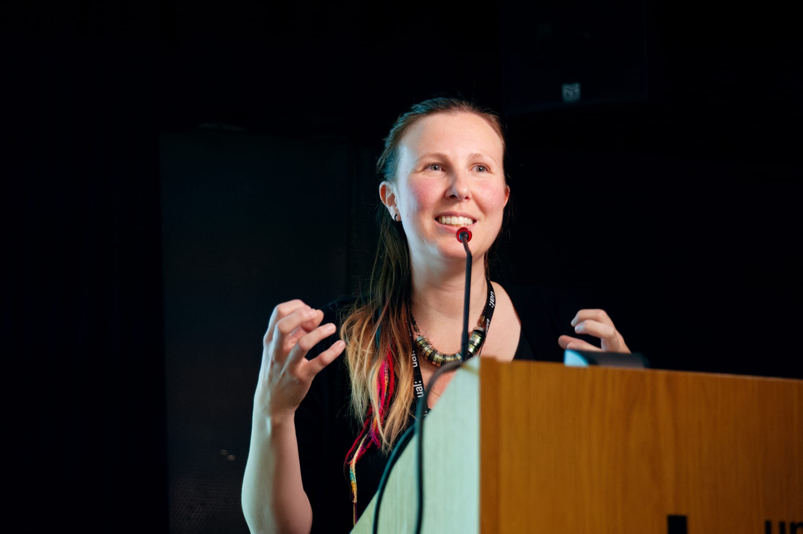
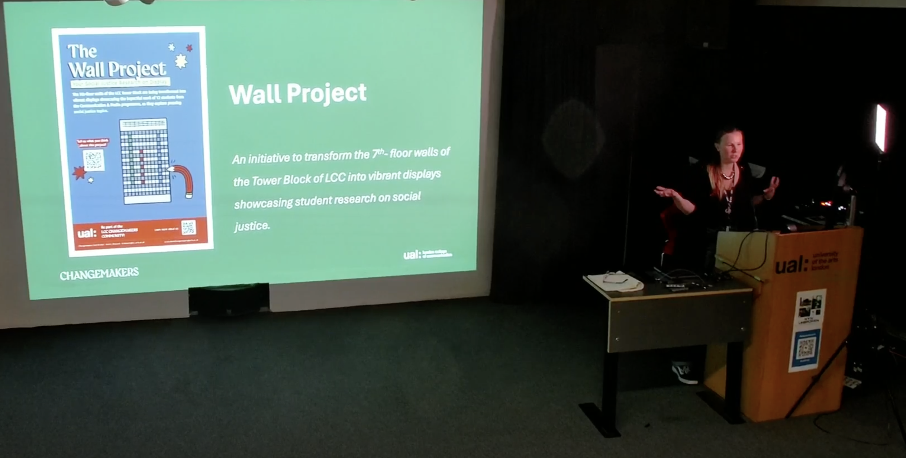
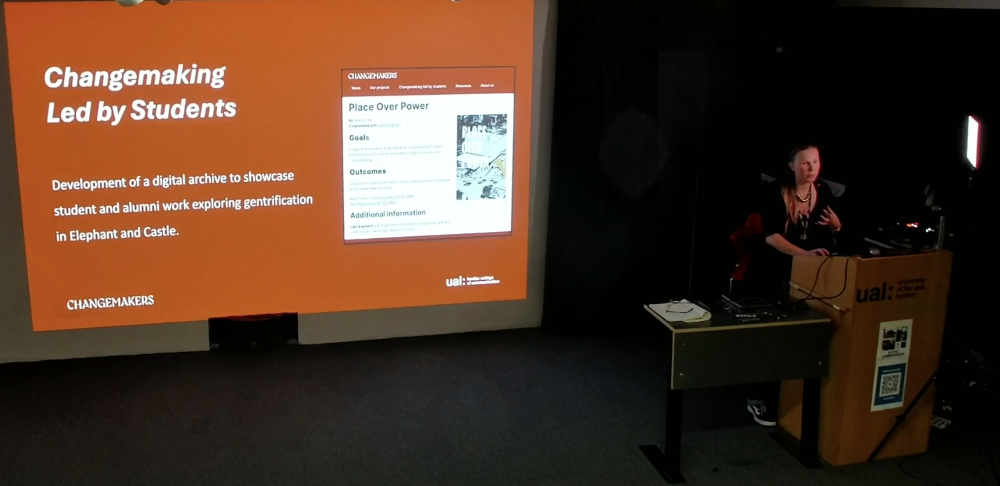
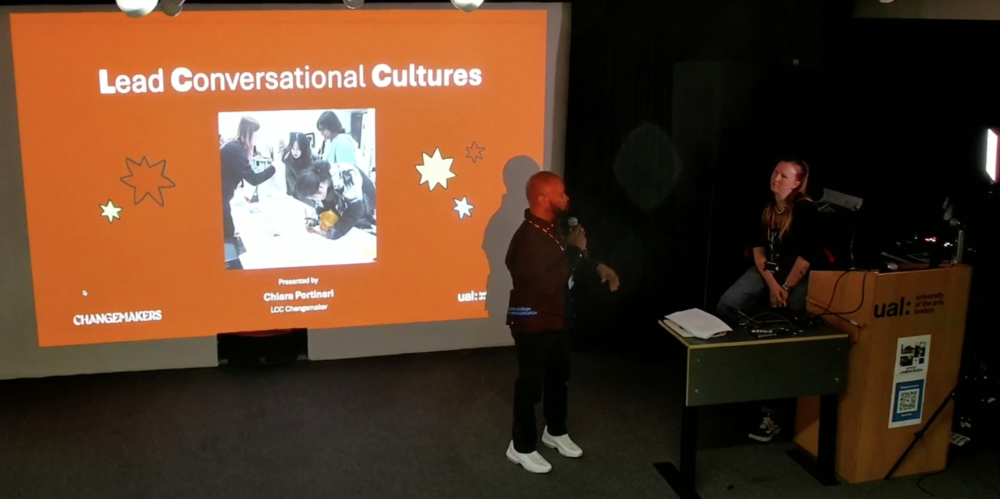

Can London College of Communication lead the innovation movement by including students' voices in curriculum and pedagogy design?

Chiara Portinari presenting at the Changemakers Making an Impact event at London College of Communication.
As part of the Changemakers Making an Impact event held at the London College of Communication (LCC) - UAL, Chiara presented their work through three projects:
- Evaluation and Impact Project
- Wall Project
- Changemaking Led By Students



Through three interconnected projects, the presentation highlighted how co-created, justice-oriented approaches can shift power dynamics, foster student voice, and support collaborative learning environments.
By embedding values of radical interdependence, feeling-thinking pedagogy, and liberatory education, the work demonstrates how students can lead meaningful, systemic transformation—within and beyond the institution.
